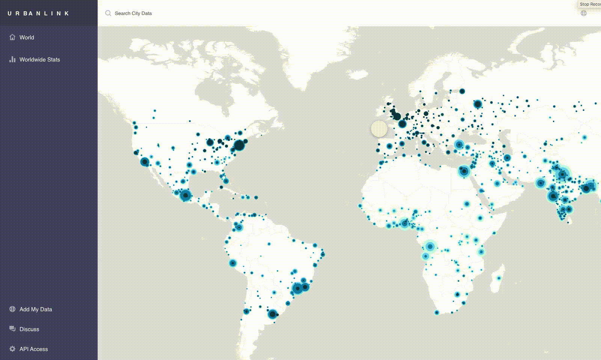

Today, 55% of the world’s population lives in cities - 70% by 2050. Building better cities is one of the greatest opportunities of our time. We can use data to build better cities - but only if the data open and easily accessible by everyone.
We are building an API and easy to use browser for all the data in every city in the world. Think Google Analytics, but for cities. Neighborhood activists, city governments, businesses, academics, hackers - anyone will be able to use this data to build better cities. You could build an app that uses city mobility data to let people decide where in the city to live. You could use the data to pressure your government to adopt better policies. You could analyze the data to determine what works best for which types of cities.
Here's very (very!) roughly some of what we are building.

Cities generate infinite amounts of data. Our hypothesis is that, if we can make that data freely and easily accessible by everyone, we (humanity) can build better cities.